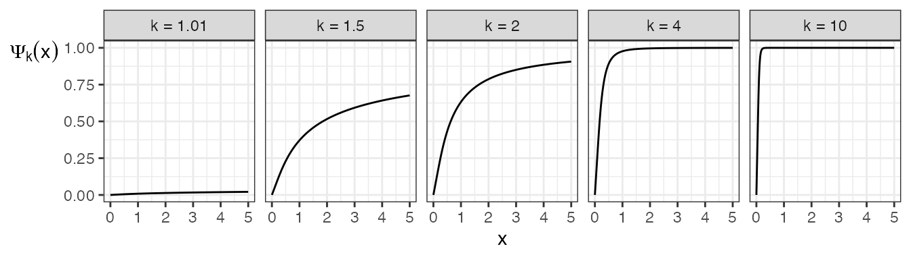
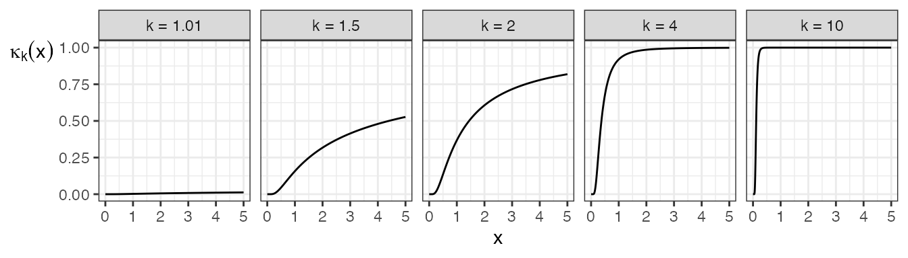
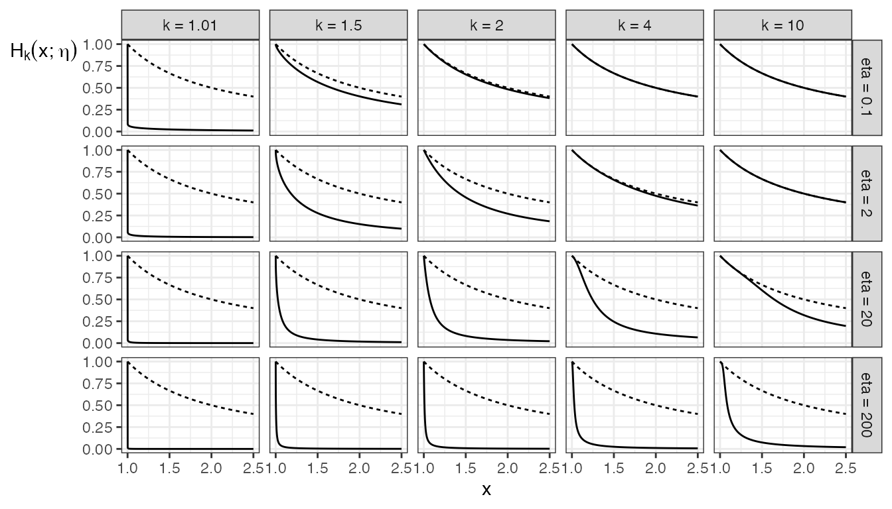
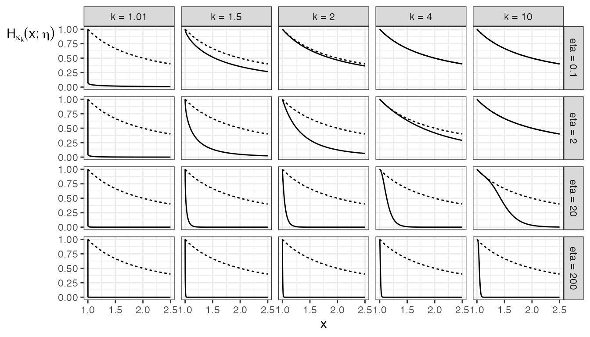

definition.RmdThe generic copula class (DJ and interpolated DJ) is characterized by a generating function \(\psi:[0, \infty) \rightarrow (0, 1]\), which needs to be a concave distribution function or convex survival function.
This manuscript provides results for a generic copula generated by some \(\psi\), in addition to the IG and IGL classes. Note that \(\psi\) need not have an inverse – the results still hold for the left-inverse, \(\psi^{\leftarrow}\).
The (Upper) Incomplete Gamma function is defined as \[\Gamma^{*}(\alpha, x) = \int_x^{\infty} t ^ {\alpha - 1} e ^ {-t} dt\] for \(\alpha > 0\) and \(x \ge 0\), and the Gamma function is defined as \(\Gamma(\alpha) = \Gamma^{*}(\alpha, 0)\).
In R, the Gamma function is accessible through the function gamma(), and the igcop package makes the Incomplete Gamma function accessible through the igamma() function.
To make the igamma() function, the igcop package uses the Gamma distribution function pgamma() with scale or rate equal to 1, and shape equal to \(\alpha\) as an indirect way of accessing the Incomplete Gamma function. Denoting this Gamma cdf as \(F_{\alpha}\), the relationship is \[F_{\alpha}(x) = 1 - \frac{\Gamma^{*}(\alpha, x)}{\Gamma(\alpha)}.\]
The IG and IGL copula families result from a parametric generating function \(\Psi_k\) for \(k > 1\), defined below.
| Function | Formula | igcop function |
|---|---|---|
| \(\Psi_k(x)\) | \[ \begin{cases} x \frac{\Gamma(k) - \Gamma^{*}(k, x ^ {-1})}{\Gamma(k - 1)} + \frac{\Gamma^{*}(k - 1, x ^ {-1})}{\Gamma(k - 1)}, & x > 0;\\ 0, & x = 0 \end{cases} \] | igl_gen() |
| \(\Psi_k'(x)\) | \[ \frac{\Gamma(k) - \Gamma^{*}(k, x ^ {-1})} {\Gamma(k - 1)} \] | igl_gen_D() |
| \(\Psi_k''(x)\) | \[ -\frac{x ^ {-k - 1} \exp(-x ^ {-1})} {\Gamma(k - 1)} \] | igl_gen_DD() |
Examples of such functions are plotted below. Note that \(\Psi_k\) always goes to 1 as its argument goes to infinity, albeit very slowly when \(k\) is close to 1 (for example, \(\Psi_{1.01}(10^{150}) \approx 0.9685\), and R by default refuses to calculate much further along its domain than this).

The “kappa” version of the generating function is also important.
General definition.
| Function | Formula |
|---|---|
| \(\kappa_{\psi}(x)\) | \(\psi(x) - x \psi'(x)\) |
| \(\kappa_{\psi}'(x)\) | \(-x \psi''(x)\) |
Taking our specific generating function in place of \(\psi\):
| Function | Formula | igcop function |
|---|---|---|
| \(\kappa_k(x) := \kappa_{\Psi_k}(x)\) | \[ \frac{\Gamma^{*}(k - 1, x ^ {-1})} {\Gamma(k - 1)} = 1 - \text{pgamma}(x ^ {-1}, k - 1) \] | igl_kappa() |
| \(\kappa_k'(x)\) | \[ \frac{\exp(-x ^ {-1})}{x ^ k \Gamma(k - 1)} = \frac{\text{dgamma}(x ^ {-1}, k - 1)}{x ^ 2} \] | igl_kappa_D() |
The following plot demonstrates some examples. As for the case of \(\Psi_k\), \(\kappa_k\) also goes to 1 as its argument goes to infinity, also very slowly for \(k\) near 1. For example, \(\kappa_{1.01}(10^{150}) \approx 0.9682\).

The copula arising from the generating function \(\psi\) gives rise to a parametric copula family governed by a parameter \(\theta > 0\), where \(\theta = 0\) is the independence copula, and \(\theta \rightarrow \infty\) results in the original copula. As such, this copula family interpolates a DJ copula, giving rise to an even wider class of copulas.
The interpolated class of copulas relies on an interpolating function function \(H_\psi(\cdot; \theta): [1,\infty) \rightarrow (0, 1]\), defined below.
Generic definition of the interpolating function:
| Function | Formula |
|---|---|
| \(H_{\psi}(x; \eta)\) | \[ \begin{cases} \frac{1}{x}\psi\left(\frac{1}{\eta \log x}\right), & x > 1;\\ 1, & x = 1 \end{cases} \] |
| \(\text{D}_1 H_{\psi}(x; \eta)\) | \[ -\frac{1}{x ^ 2} \left[ \psi\left(\frac{1}{\eta \log x}\right) + \frac{1}{\eta (\log x) ^ 2} \psi'\left(\frac{1}{\eta \log x}\right) \right] \] |
| \(\text{D}_2 H_k(x; \eta)\) | \[ -\frac{1}{x \eta ^ 2 \log x} \psi'\left(\frac{1}{\eta \log x}\right) \] |
Definition of the interpolating function using the IGL generating function \(\Psi_k\) (taking \(H_k := H_{\Psi_k}\)):
| Function | Formula | igcop function |
|---|---|---|
| \(H_k(x; \eta)\) | \[ \begin{cases} \frac{1}{x}\Psi_k\left(\frac{1}{\eta \log x}\right), & x > 1;\\ 1, & x = 1 \end{cases} \] | interp_gen() |
| \(\text{D}_1 H_k(x; \eta)\) | \[ -\frac{ (\log x + 1) (\Gamma(k) - \Gamma^{*}(k, \eta \log x)) + \eta (\log x) ^ 2 \Gamma^{*}(k - 1, \eta \log x) }{ \eta (x \log x) ^ 2 \Gamma(k - 1) } \] | interp_gen_D1() |
| \(\text{D}_2 H_k(x; \eta)\) | \[ -\frac{1}{x \eta ^ 2 \log x} \frac{\Gamma(k) - \Gamma^{*}(k,\eta \log x)}{\Gamma(k)} \] | NA |
For the IG copula, \(H_k := H_{\Psi_k}\) (function interp_gen() in the igcop package). Note that \(H_k(\cdot; \theta)\) is strictly decreasing for all \(\theta > 0\) and \(k > 1\), so \(H_k^{-1}(\cdot; \theta)\) is the unique inverse function of \(H_k(\cdot; \theta)\).
Examples of such functions are demonstrated in the plots below, compared with the plot of the reciprocal \(1/x\) as the dotted line. Notice that increasing \(k\) draws \(H_k\) closer to the reciprocal function, whereas increasing \(\eta\) pulls \(H_k\) further from the reciprocal function.

The function \(H_{\kappa_k}\) is also important for the 2|1 conditional quantile function of the IG copula family. In the igcop package, it goes by the name interp_kappa(), with the corresponding family of functions as interp_igl() has. Here is what those functions look like, also compared with the reciprocal function \(1/x\) as the dotted lines:

The Durante-Jaworski copula class:
| Quantity | Formula |
|---|---|
| \(C(u, v; \psi)\) | \[ u + v - 1 + (1 - u) \psi\left((1 - u) ^ {-1} \psi^{\leftarrow}(1 - v)\right) \] |
| \(C_{2 | 1}(v | u; \psi)\) | \[ 1 - \kappa_{\psi}\left((1 - u) ^ {-1} \psi ^ {\leftarrow}(1 - v) \right) \] |
| \(C_{1 | 2}(u | v; \psi)\) | \[ 1 - \frac{\psi'\left((1 - u) ^ {-1} \psi ^ {\leftarrow}(1 - v)\right)} {\psi'\left(\psi ^ {\leftarrow}(1 - v)\right)} \] |
| \(c(u, v; \psi)\) | \[ -\frac{ \psi ^ {\leftarrow}(1 - v) \psi''\left((1 - u)^{-1} \psi^{\leftarrow}(1 - v)\right) }{ (1 - u) ^ 2 \psi'\left(\psi^{\leftarrow}(1 - v)\right) } \] |
| \(C_{2 | 1}^{-1}(\tau | u; \psi)\) | \[ 1 - \psi((1 - u) \kappa_{\psi}^{\leftarrow}(1 - \tau)) \] |
| \(C_{1 | 2}^{-1}(\tau | v; \psi)\) |
Note that Coia (2017) in E.1.2 mistakenly writes these distributional quantities as if the family was defined as its reflections.
The parameter space is \(k > 1\). Note: Values of \(k < 2\) lead to unstable computations – especially with \(k\) close to 1.
| Quantity | Formula | distplyr function |
|---|---|---|
| \(C(u, v; k)\) | \[ u + v - 1 + (1 - u) \Psi_k\left((1 - u) ^ {-1} \Psi_k^{-1}(1 - v)\right) \] | piglcop() |
| \(C_{2 | 1}(v | u; k)\) | \[ 1- \frac{\Gamma^{*}\left(k - 1, (1 - u) / \Psi_k ^ {-1}(1 - v)\right)} {\Gamma\left(k-1\right)} \] |
pcondiglcop(), pcondiglcop21()
|
| \(C_{1 | 2}(u | v; k)\) | \[ 1 - \frac{\Gamma(k) - \Gamma^{*}\left(k, (1 - u) / \Psi_k ^ {-1}(1 - v)\right)} {\Gamma(k) - \Gamma^{*}\left(k, 1 / \Psi_k ^ {-1}(1 - v)\right)} \] | pcondiglcop12() |
| \(c(u, v; k)\) | \[\frac{ (1 - u)^{k-1} \left[\Psi_k^{-1}(1 - v)\right] ^ {-k} \exp\left\{-(1 - u) / \Psi_k^{-1}(1 - v)\right\} }{ \Gamma(k) - \Gamma^{*}\left(k, 1 / \Psi_k^{-1}(1 - v)\right) }\] | diglcop() |
| \(C_{2 | 1}^{-1}(\tau | u; k)\) | \[ 1 - \Psi_k\left(\frac{1 - u}{\text{qgamma}(\tau, k - 1)}\right) \] |
qcondiglcop(), qcondiglcop21()
|
| \(C_{1 | 2}^{-1}(\tau | v; k)\) | qcondiglcop12() |
| Quantity | Formula |
|---|---|
| \(C(u, v; \theta, \psi)\) | \[ u + v - 1 + (1 - u) H_{\psi}\left(H_{\psi} ^ {\leftarrow}(1 - v; \theta); \theta (1 - u)\right) \] |
| \(C_{2 | 1}(v | u; \theta, \psi)\) | \[ 1 - H_{\kappa_{\psi}}\left(H_{\psi} ^ {\leftarrow}(1 - v; \theta); \theta (1 - u)\right) \] |
| \(C_{1 | 2}(u | v; \theta, \psi)\) | \[ 1 - (1 - u) \frac{ \psi\left(\frac{1}{\theta (1 - u) \log t}\right) + \frac{1}{\theta (1 - u) (\log t) ^ 2} \psi'\left(\frac{1}{\theta (1 - u) \log t}\right) } { \psi\left(\frac{1}{\theta \log t}\right) + \frac{1}{\theta (\log t) ^ 2} \psi'\left(\frac{1}{\theta \log t}\right) } \] where \(t = H_{\psi} ^ {\leftarrow}(1 - v; \theta)\) |
| \(c(u, v; \theta, \psi)\) | \[ \frac{ \kappa_{\psi}\left(\frac{1}{\theta (1 - u) \log t}\right) + \frac{1}{\theta (1 - u) (\log t) ^ 2} \kappa_{\psi}'\left(\frac{1}{\theta (1 - u) \log t}\right) } { \psi\left(\frac{1}{\theta \log t}\right) + \frac{1}{\theta (\log t) ^ 2} \psi'\left(\frac{1}{\theta \log t}\right) } \] where \(t = H_{\psi} ^ {\leftarrow}(1 - v; \theta)\) |
| \(C_{2 | 1}^{-1}(\tau | u; \theta, \psi)\) | \[ 1 - H_{\psi}\left(H_{\kappa_{\psi}}^{\leftarrow}(1 - \tau; \theta (1 - u)); \theta \right) \] |
| \(C_{1 | 2}^{-1}(\tau | v; \theta, \psi)\) |
Note that Coia (2017) in E.2.2 mistakenly writes these distributional quantities as if the family was defined as its reflections.
The parameter space is \(\theta \ge 0\), \(k > 1\). Note: Values of \(k < 2\) lead to unstable computations – especially with \(k\) close to 1.
| Quantity | Formula | distplyr function |
|---|---|---|
| \(C(u, v; \theta, k)\) | \[ u + v - 1 + (1 - u) H_k\left(H_k ^ {-1}(1 - v; \theta); \theta (1 - u)\right) \] | pigcop() |
| \(C_{2 | 1}(v | u; \theta, k)\) | \[ 1 - \frac{ \Gamma^{*}\left(k - 1, \theta (1 - u) \log\left(H_k^{-1}(1 - v; \theta)\right)\right) }{ H_k^{-1}(1 - v; \theta) \Gamma(k - 1) } \] |
pcondigcop(), pcondigcop21()
|
| \(C_{1 | 2}(u | v; \theta, k)\) | \[ 1 - (1 - u) \frac{ \text{D}_1 H_k\left(H_k^{-1}(1 - v; \theta); \theta(1 - u)\right) }{ \text{D}_1 H_k\left(H_k^{-1}(1 - v; \theta); \theta\right) } \] | pcondigcop12() |
| \(c(u, v; \theta, k)\) | \[ -\frac{ \theta ^ {k - 1} (1 - u) ^ {k-1} (\log t_v) ^ {k - 2} t_v ^ {-\theta (1 - u)} + \Gamma^{*}(k - 1, \theta (1 - u) \log t_v) }{ \Gamma(k - 1) t_v ^ 2 \text{D}_1 H_k(t_v; \theta) } \] | digcop() |
| \(C_{2 | 1}^{-1}(\tau | u; \theta, k)\) |
qcondigcop(), qcondigcop21()
|
|
| \(C_{1 | 2}^{-1}(\tau | v; \theta, k)\) | qcondigcop12() |
(Note that Coia (2017) mistakenly writes \(H_{\psi}\) instead of \(H_k\) in the formula for \(C_{\text{IG}, 1 | 2}\).)
The copula family is named “Integrated Gamma” because \(\Psi_k'(1 / \cdot)\) is proportional to the Gamma distribution cdf with scale parameter 1 and shape parameter \(k\).
These two families are related, in that \[\lim_{\theta \rightarrow \infty} C_{IG}(u, v; \theta, k) = C_{IGL}(u, v; k)\] for all \(k\). Further, taking \(\theta = 0\) results in the independence copula, so that the IG copula family is an “interpolation” between the independence copula and each IGL copula.
Noting that \(\Gamma(k - 1) = \Gamma(k) / (k - 1)\),
\[ \Psi_k(x) = x (k - 1) \left(1 - \frac{\Gamma^{*}(k, x ^ {-1})}{\Gamma(k)} \right) + \left(\frac{\Gamma^{*}(k - 1, x ^ {-1})}{\Gamma(k - 1)}\right) \]
The two major parentheses can be calculated from the Gamma cdf: the first set being pgamma(1 / x, shape = k), and the second set being pgamma(1 / x, shape = k - 1, lower.tail = FALSE). Here is the definition of igl_gen:
igl_gen## function (t, k)
## {
## tinv <- 1/t
## res <- (k - 1) * t * stats::pgamma(tinv, k) + stats::pgamma(tinv,
## k - 1, lower.tail = FALSE)
## res[t == Inf] <- 1
## res
## }
## <bytecode: 0x7fb62d6f5888>
## <environment: namespace:igcop>The derivative is proportional to the Gamma density. Using the same Gamma function identity:
\[ \Psi_k'(x) = (k - 1) \left(1 - \frac{\Gamma^{*}(k, x ^ {-1})}{\Gamma(k)}\right) \]